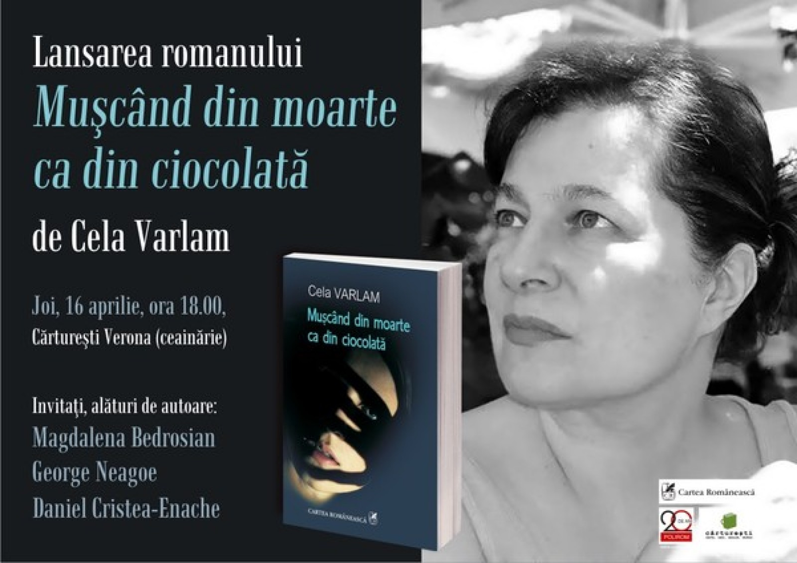

 Joi, 16 aprilie, ora 18.00, la Librăria Cărturești Verona (ceainărie) din București, va avea loc lansarea romanului Mușcând din moarte ca din ciocolată, de Cela Varlam, recent apărut la Editura Cartea Românească, disponibil și în ediție digitală.
Invitați, alături de autoare: Magdalena Bedrosian, George Neagoe și Daniel Cristea Enache.
În noul său roman, Mușcând din moarte ca din ciocolată, Cela Varlam își asumă trăirea insuportabilului, pentru a da glas unui avertisment adresat întregii omeniri.
O scenă de o violență halucinantă deschide paginile acestei cărți. Istria. Locuitorii unui sat istro-român, comunitate din care fac parte preadolescenta Ena și familia ei, sunt ridicați, într-o noapte, de un comando sârbesc, care-i transportă într-o zonă carstică, unde sunt împușcați și/sau împinși în crevasele abisale ale locului. Erau anii când armata lui Tito trecuse la purificări etnice, recurgând la metode asemănătoare cu cele ale fostului ocupant.
Între Ena și Filip, ofițerul titoist, șeful comandoului ucigaș, dar și salvatorul fetei, se dezlănțuie o iubire răvășitoare, în care victima și călăul traversează, după terminarea războiului, îmbrățișați sau măcinați de strigăte și despărțiri, drama comunităților din sud-estul european.
Exodul oamenilor de oriunde spre lagărele de refugiați din Europa, încercând să scape de tăvălugul "vremurilor noi," destinele celor din spatele sârmelor ghimpate, care decid că și-au găsit acolo căminul, pun împreună toate personajele romanului într-o construcție ce nu-și găsește analog în proza românească actuală.
Cela Varlam (n. 1952) a absolvit cursurile Facultății de Limbi Romanice a Universității din București. A predat limba și literatura franceză; a participat la cursuri de perfecționare profesională în cadrul structurii Alliance française din Paris. Începând cu 1980, a scris scenarii radiofonice. A lucrat (1982-1993) ca secretar literar al Teatrului Bulandra, perioadă pe care o consideră adevărata sa etapă de formare profesională. A publicat articole de jurnalism cultural în revistele Teatru și Teatrul azi și în cotidiene sau săptămânale. A fost traducător și interpret în cadrul unor societăți comerciale. Primul său roman, "Trec rânduri, rânduri muritorii", apare în 1998 și obține Premiul pentru debut în proză al Uniunii Scriitorilor din România.
I-au urmat, în 2001, volumul de povestiri Lumea dintre lumi, în 2005, romanul Să nu-mi luați temnița, care s-a bucurat de o primire sonoră atât în presa de specialitate, cât și în rândul cititorilor, iar în 2010, romanul Sânge-albastru, sânge roșu. Cela Varlam este membră a Uniunii Scriitorilor din România din anul 2008.
April 15, 2015
© 2015 Cotidianul